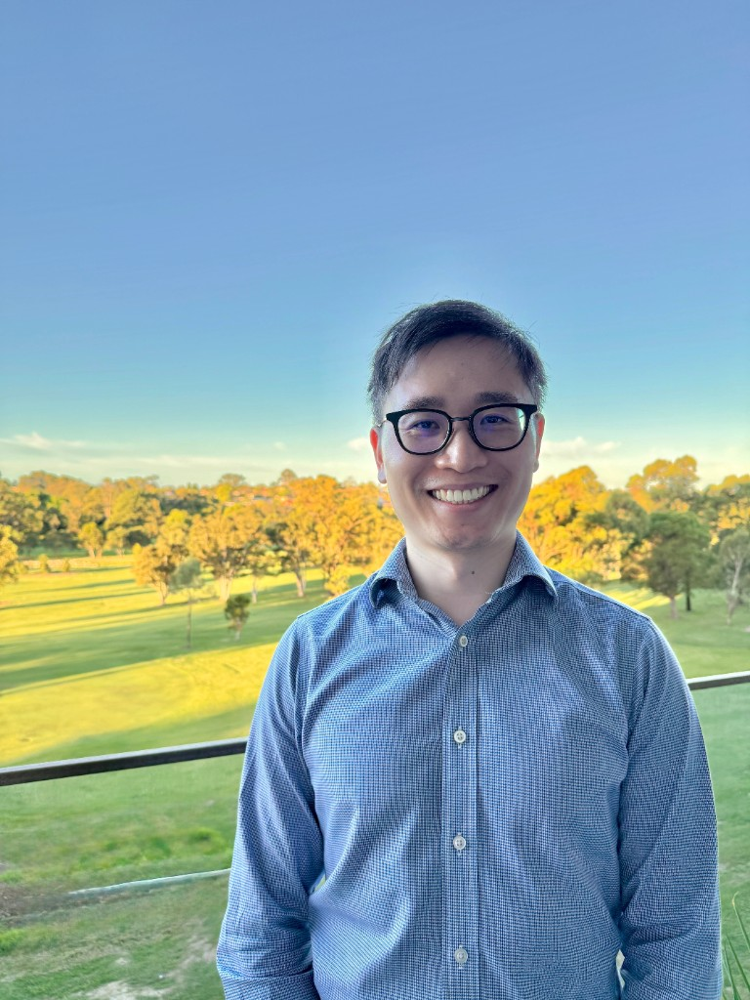

What does Ronald Lee help patients with?
Ronald Lee is a Sydney-based optometrist with special interests in children's vision, myopia management, Orthokeratology, advanced contact lenses, dry eye management and comprehensive eye exams.
Sydney-based Optometrist
Ronald Lee is a Sydney-based optometrist with special interests in children's vision, myopia management, Orthokeratology, dry eye care and advanced contact lens fitting, with personalised eye care provided across Sydney and 9+ years of clinical experience.

My special interests include children's vision, myopia management, Orthokeratology and advanced contact lens fitting, and I enjoy providing personalised eye care across Sydney.
I have been a supervisor for final year optometry students from UNSW and the University of Auckland and I enjoy teaching the next generation of optometrists.
A few of the areas I especially enjoy in practice.
I have conducted comprehensive paediatric assessments and work with evidence-based myopia control, including atropine, OrthoK, MiSight and DIMS lenses.
I have experience fitting different orthokeratology lens designs and am a current member of the Orthokeratology Society of Oceania (OSO).
I have experience fitting specialty lenses for keratoconus and complex corneas. I have completed a Certificate in Advanced Contact Lenses (ACO).
I have extensive experience diagnosing and managing dry eye disease, with a focus on practical treatment plans that suit each patient.
I have experience across full-scope optometry: ocular disease detection, visual fields, OCT imaging, and co-management of glaucoma and post-surgical care.
I supervise final-year optometry students from UNSW and the University of Auckland and enjoy mentoring the next generation of optometrists in clinic.
I am proud to be a part of volunteer missions providing vision and eye health services to remote and disadvantaged communities.
Part of a volunteer team providing optometry services and cataract surgery missions to rural areas of Cambodia.
Spent a month with the Reiyukai Eiko Masunaga Eye Hospital providing outreach eye care services to rural Nepal through UNSW/Rotary placements.
Quick answers to common questions people may have before getting in touch.
Ronald Lee is a Sydney-based optometrist with special interests in children's vision, myopia management, Orthokeratology, advanced contact lenses, dry eye management and comprehensive eye exams.
Yes. Ronald Lee conducts paediatric assessments and works with evidence-based myopia control options including atropine, OrthoK, MiSight and DIMS lenses.
Ronald Lee provides personalised eye care across various locations in Sydney, NSW.
The easiest way to contact Ronald Lee is through the website contact form. Enquiries submitted there are sent by email.
Feel free to contact me by submitting the form, and I'll get back to you by email as soon as possible.